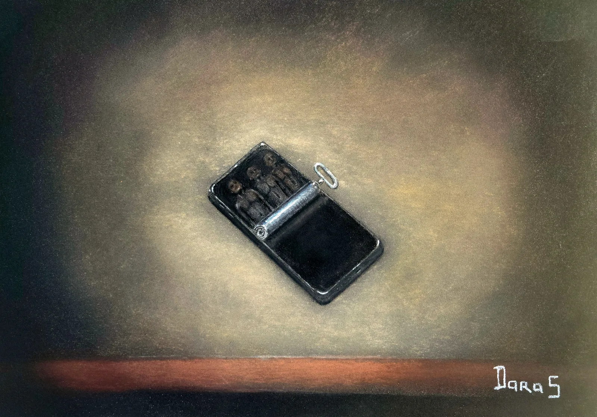

Le grand repos
Triptyque : Le Silence des ondes
Dernier volet du triptyque Le silence des ondes, cette œuvre détourne avec ironie un objet devenu universel. Le smartphone se transforme en boîte de conserve où reposent trois êtres figés, comme des sardines oubliées. Sans condamner la technologie, elle interroge notre capacité à demeurer pleinement vivants lorsque le monde numérique devient notre principal lieu de rencontre. Le « grand repos » évoque alors autant le confort que l'abandon, tandis que « le bonheur d'être ensemble » résonne comme une question laissée ouverte au regard du spectateur.
Demander des informations →← Retour à la galerie